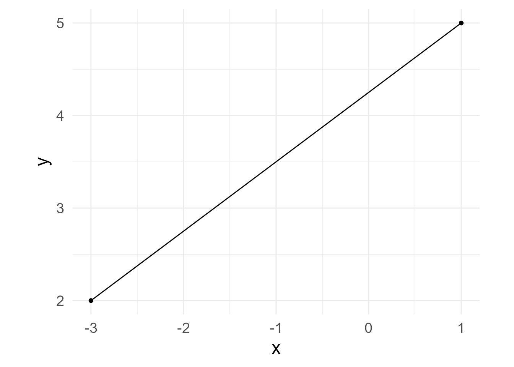

Making a simple diagram with a point-and-click drawing program saves time and can produce good results if handled with care. However, making a complex diagram worthy of publication can take many hours of fuss and bother.
When I discovered TikZ, I was amazed at how much better my diagrams could be. TikZ knows things about the objects it draws—like where lines and objects intersect and how far they are from each other. Instead of eyeballing where to place objects, I could tell TikZ exactly where to draw objects in relation to each other (e.g., draw a circle to the right of rectangle with 4cm of space between them). I suspect that the precision, consistency, and beauty of TikZ diagrams add to their persuasive power because readers intuit that such figures are the product of careful deliberation.
Because I mainly compute statistical models in R, getting information from R to TikZ was an intensive process, and integrating TikZ graphics with R graphics was often an exercise in frustration. Though I very much respect the labor of those who have made the TikZ ecosystem open and flexible, I never felt at ease when trying to automate TikZ or extending its capabilities.
When the S7 package became available, it seemed that what I wanted was within my grasp: to draw diagrams with an object-oriented approach, welding the precision of TikZ with the flexibility of R. The ggdiagram package makes objects that can hold or compute various properties and can be placed directly in a ggplot2 plot. I do not imagine that ggdiagram will ever duplicate the full functionality of TikZ, but being able to make TikZ-like diagrams within R eliminates many pain points from my previous workflow and offers a world of possibilities.
First steps
The ggplot2 ecosystem already has the ability to create points, lines, and shapes, and it is ideally suited for the display of data and statistical trends. There is no reason to use ggdiagram for the tasks that ggplot2 already does fabulously well. However, once ggplot2 creates points, lines, and shapes, it is not always easy to extract information about them to create new objects. For example, if I draw a line segment from the center of an ellipse to the center of a rectangle, where does the line intersect with the ellipse and the rectangle? Where is the point midway between those intersection points? These quantities can be computed with a bit of algebra and trigonometry, but when making complex figures, such computations are tedious distractions.
The functions in ggdiagram with the ob_ prefix (e.g,. ob_point, ob_line, and ob_circle) create objects using S7, which allows the objects to hold information about the object’s properties (e.g., location, color, and rotation angle) and to compute the location of its edges and points of intersection with other objects. Properties of S7 objects are extracted with the @ operator. For example, we can create a circle with the ob_circle function and extract various properties:
x <- ob_circle()
x@radius
#> [1] 1
x@circumference
#> [1] 6.283185
x@area
#> [1] 3.141593
x@diameter
#> [1] 2Simple Plots
As seen in Figure 1, objects with the ob_ prefix can be added to any ggplot object in the usual manner.
# Plot
ggplot() +
ob_circle(radius = 1) +
ob_rectangle(width = 2,
height = 2) +
coord_equal() +
theme_void()ggplot function
The ggdiagram function calls the ggplot function, sets the ggplot2 theme (defaults to theme_void), and also sets the defaults of key geoms so that font families, font sizes, line widths, and point sizes do not have to be specified repeatedly.
In Figure 2, we can locate points on a circle’s circumference at any angle. The degree function makes it easy to compute and label angles as degrees.
Styling an object
Objects in ggdiagram can be styled in any way that its underlying geom can be styled. Let’s create a segment and its two endpoints.
p1 <- ob_point(-3, 2)
p2 <- ob_point(1, 5)
s1 <- ob_segment(p1, p2)
bp <- ggdiagram(theme_function = ggplot2::theme_minimal,
font_size = 18)
bp +
p1 +
p2 +
s1
The primary options for styling a segment are alpha, color, linetype, and linewidth. However, it can take any style from ggarrow::geom_arrow_segment
If you are not sure which properties can be set, you an see them in the @aesthetics@style slot.
s1@aesthetics@style
#> [1] "alpha" "arrow_head" "arrow_fins" "arrowhead_length"
#> [5] "color" "length_head" "length_fins" "lineend"
#> [9] "linejoin" "linewidth" "linewidth_fins" "linewidth_head"
#> [13] "linetype" "resect" "resect_fins" "resect_head"
#> [17] "stroke_color" "stroke_width"Styles can be specified when the object is created.
s2 <- ob_segment(p1, p2, color = "green4")
bp + s2Styles can be modified after the segment is created:
s2@linewidth <- 3
bp + s2A “pipe-friendly” way to modify any ggdiagram object is to use S7’s set_props function, which has been re-exported to ggdiagram for the sake of convenience.
bp +
s1 |>
set_props(color = "red",
linetype = "dashed")Making Styles Stick with redefault
To style an object the same way repeatedly, use the redefault function to create an alternate version of an ob_* function with the default arguments set differently. The redefault function is like purrr::partial except that preset arguments can still be modified. It can be used on any R function.
Apply Styles Across Shapes with ob_style
Suppose you want to create a list of styles that you want to pass to multiple objects to create a cohesive style. The ob_style function can contain styles that can be passed along to other functions.
style_shape <- ob_style(color = NA,
fill = "dodgerblue4",
family = "serif")
my_label <- redefault(
ob_label,
color = "white",
fill = NA,
family = "serif",
size = 18
)
ggdiagram() +
ob_circle(
x = -3,
style = style_shape,
label = my_label("Circle")) +
ob_rectangle(
width = 3,
style = style_shape,
label = my_label("Rectangle")
) +
ob_ellipse(
x = 3,
b = 1.5,
style = style_shape,
label = my_label("Ellipse")
) +
ob_ngon(
y = 2,
n = 6,
angle = degree(90),
style = style_shape,
label = my_label("Hexagon")) +
ob_ngon(
y = -2,
n = 3,
angle = degree(90),
style = style_shape,
label = my_label("Triangle", nudge_y = -.25))ob_style function creates a list of styles that can be passed to other ggdiagram functions
Placing Objects in Relation to Other Objects
The place function will place an object a specified distance and direction from another object. Here we place a 1 × 1 rectangle above unit circle x such that the separation between them is .5 units. The connect function draws an arrow between them, with 2mm of space resected.
x <- ob_circle()
y <- ob_rectangle() |>
place(from = x,
where = "above",
sep = .5)
ggdiagram() +
x +
y +
connect(x, y, resect = 2)The where parameter can be specified with
- Direction words like left, right, above, top, below, bottom, above left, top right, below right, bottom left, etc.
- Cardinal points like north, south, east, west, northeast, southwest, north-northeast, west-southwest, etc.
- Degrees using the
degreefunction (e.g.,degree(21)) - Radians using the
radianfunction (e.g.,radian(pi)) - Turns using the
turnfunction (e.g.,turn(1/5))
Object Arrays with ob_array
Sometimes it is useful to make arrays of objects. The ob_array function makes k copies of an object,arranges them in a line in a specified direction, and separates the objects by a specified amount. By default, the array is arranged horizontally, centered on the original object, separated by 1 unit. Here we make an array of 5 circles.
Building Plots Sequentially in a ggplot2 Pipeline
Often we want to build a diagram in which newer objects depend on previously specified objects. To assign a variable in the middle of a ggplot2 workflow, we can enclose an assignment statement in curly braces {}.
Figure 10 makes use of a curly braces to create:
- Latent variable A as a circle with radius 2,
- Observed variables A1–A3 3 units below A
- Loading paths (connecting arrows) from the latent A to observed variables A1–A3
- Error variance paths for each observed variable.
# Loadings
loadings <- c(.86, .79, .90)
error_variances <- sqrt(1 - loadings ^ 2)
ggdiagram(font_size = 16) +
# Latent variable
{A <- ob_circle(radius = 2,
label = ob_label("A",
size = 96,
nudge_y = -.15))} +
# Observed variables (array of 3 superellipses below A)
{A_3 <- ob_ellipse(m1 = 20) |>
place(from = A,
where = "below",
sep = 3) |>
ob_array(
k = 3,
sep = .5,
label = ob_label(
label = paste0("A~", 1:3, "~"),
size = 32,
vjust = .6
)
)} +
# Observed variable loadings with labels set to the same y coordinate
connect(
from = A,
to = A_3,
resect = 2,
label = ob_label(label = round_probability(loadings),
angle = 0))@set_label_y() +
# Error variances
ob_variance(
A_3,
where = "south",
looseness = 1.2,
bend = -20,
label = ob_label(label = round_probability(error_variances))
)Changing the default arrowhead
Functions that can make arrows (e.g., connect, ob_segment, ob_arc, ob_path, ob_bezier) use functions from the ggarrow package. The arrowheads are fully customizable. The arrowheadr package has functions for many custom arrowheads and for creating new arrowheads.
The arrowhead function returns a matrix that draws the default arrowhead.
arrowhead()
#>
#> ── <class_arrowhead>
#> A matrix with 2 columns and 200 rows. First 6 rows:
#> x y
#> [1,] -0.39 0.00
#> [2,] -0.39 0.02
#> [3,] -0.39 0.04
#> [4,] -0.40 0.06
#> [5,] -0.40 0.08
#> [6,] -0.40 0.10The default arrowhead is an elongated deltoid shape (i.e., arrowheadr::arrow_head_deltoid(d = 2.3)). Specifying a different arrowhead repeatedly is tedious.
Within the current R session, the default arrowhead can be changed to anything desired. For example,
set_default_arrowhead(ggarrow::arrow_head_wings(offset = 30))
arrowhead()
#>
#> ── <class_arrowhead>
#> A matrix with 2 columns and 4 rows.
#> x y
#> [1,] 1.0 0.00
#> [2,] -0.5 0.87
#> [3,] 0.0 0.00
#> [4,] -0.5 -0.87Now any function that uses the default arrow will use the new default.